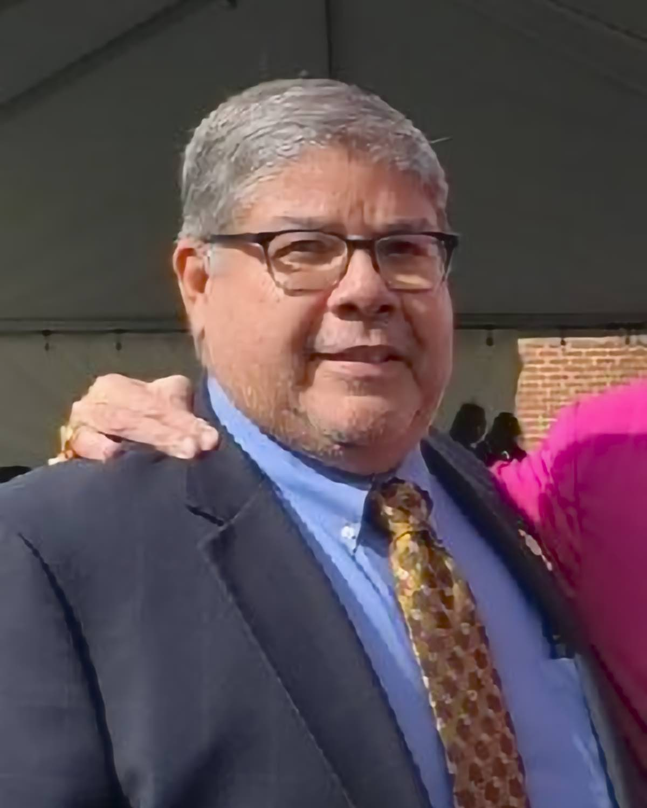

Grace Roeder
Hi! My name is Grace and I'm a 5 year Lifeteen CORE Veteran.
I was raised in a loving, Catholic household where I was taught the importance of love, prayer and service.
My relationship with God became stronger through my high school years as an active youth group member and my
faith deepened during my time at Monmouth University as a member of the Catholic Campus Ministry.
I currently work as a high school science teacher and enjoy working with and mentoring young people.
In my spare time I enjoy hiking, camping, and adventuring in our nation's beautiful National Parks.
I find that I feel closest to Jesus when I'm out and enjoying nature!
Robert Rodriguez

Bert has been a parishioner in the St Mary's Mother of God Parish community for 27 years.
I live my life in Thanksgiving to the Lord after retiring
from a 42 year career on Wall Street. I'm 2nd year student of the Encounter School of Ministry graduating in May 2023.
I had a life changing conversion through the Holy Spirit during a Life in the Spirit Seminar over 10 years ago.
I serve as a Core Team Member of Life Teen. I serve as a Eucharist Minister and as a member of the St Mary's Finance Committee.
Gina Gallagher
Mother of 2 teenage girls. Has been a St. Mary's Catechist and parishioner for the past 6 years.
She enjoys teaching first grade children and teens about Jesus' love and how incredible life can be when you're close to Him.
The rest of the time she is busy selling homes and commercial properties and working part time at Verizon.